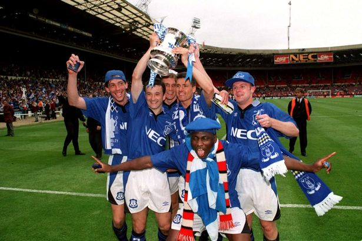

E.H.: Everton History
Everton F.C.
Everton F.C. is a Liverpool-based professional football club that competes in the Engligh Premiere League. Everton fans are commonly called "Evertonians" or "Blues." Their main rival is Liverpool F.C. - the stadiums of the two clubs are only separated by one mile.
Premiere League Football
The Premiere League is the top level of English professional football. The League consists of 20 clubs that compete from August to May. The Premiere League tops all other sports leagues in terms of viewership.
About Everton History
Everton History is a fan website that aims to provide the history of Everton F.C. for fans in a simple, easy-to-navigate manner. The site is run on a purely volunteer basis. Updates are made as often as possible.